The Twelve Workshops That Ran the Base: Skills Left in Artisans’ Hands
The 12 Workshops, from military supplies to everyday goods and royal tribute
The 12 Workshops area
A military base does not run on commanders' orders and warships alone. Equipment and weapons for the soldiers, things for daily life, and objects for rites and ceremonies all had to be ready for the base to function. Tongjeyeong gathered skilled artisans from many regions to make these things, and its workshops produced not only military supplies but also everyday goods and tribute gifts for the king.
The 12 Workshops of Tongjeyeong refer to the place where these many kinds of making came together. The "12" need not mean exactly twelve workshops. Materials from the Tongyeong Cultural City Center and the Korea Tourism Organization read it as a figure of speech for the many kinds of workshops and artisans gathered here. The actual types and makeup of the workshops changed over time and from record to record, so the workshops of history should be understood separately from the number of buildings restored today.
Workshop route
From Sebyeonggwan, enter the workshop street behind it and visit 04 Seonjabang through 16 Yajangbang in order. This diagram shows the order, not the exact building positions. Tap a number to read its story.
Each artisan here worked with different materials and techniques. They wove horsehair, split bamboo into fine strips, shaped wood, set mother-of-pearl, and hammered metal into fittings. Their work differed from workshop to workshop, but what they made was connected by one larger need: keeping Tongjeyeong running.
The 13 workshops along the route
Today Tongjeyeong has 13 workshops rebuilt in a 2013 restoration project. They are introduced here in the order of the visitor route.
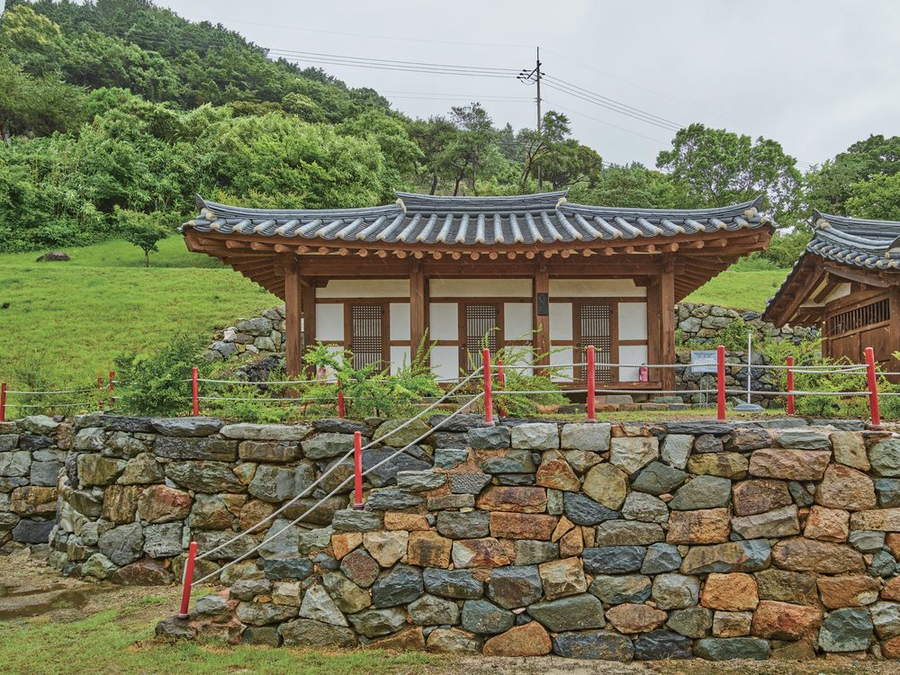
04SeonjabangSource: Tongyeong City MuseumTongyeong FanSource: National Folk Museum of Korea Paju
04SeonjabangWind and ornament in a fan
Seonjabang made Tongyeong's famous fan, the miseon (尾扇). The name is said to come from its shape, which resembles a fish's tail fin. It is linked to the custom of the king presenting fans to his officials around the Dano festival, and the Tongyeong miseon is known for its fine ribs and decorated handle. Seonjabang is said to have been an important workshop that made the king's gifts.
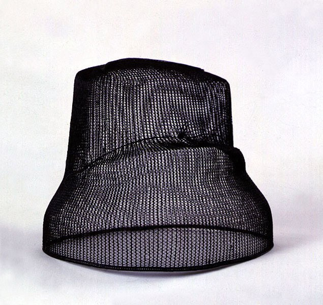
05Tanggeon capSource: National Folk Museum of Korea PajuHorsehair jeongjagwan hatSource: National Folk Museum of Korea Paju
05ChongbangCareful hands weaving horsehair
Chongbang worked horsehair into caps such as tanggeon and yugeon. Weaving thin strands of horsehair is not a matter of tying them tightly; the work must keep the material's flexibility while holding a steady shape. Headwear had to be light and comfortable yet keep its form, so understanding and handling the material was essential.
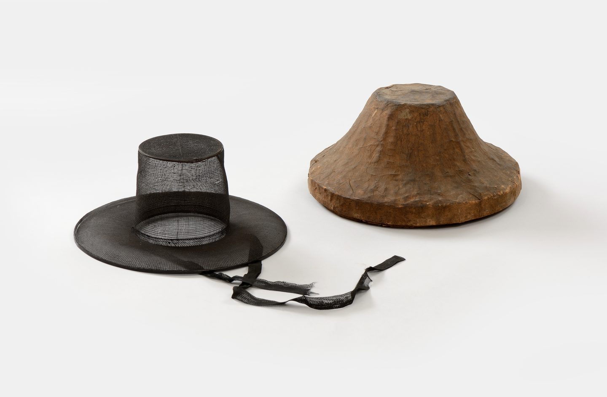
06IpjabangSource: Tongyeong City MuseumA gat hat and its caseSource: National Folk Museum of Korea Paju
06IpjabangShaping the gat and traditional hats
Ipjabang made the gat and many other traditional hats. Its main products included the heukrip, beonggeoji, satgat and paeraengi. A gat may look like a simple hat, but it is a complex craft object made by weaving fine materials and joining several parts. Look at the lines and proportions of a finished gat and you can sense how precise the artisan's hands were.
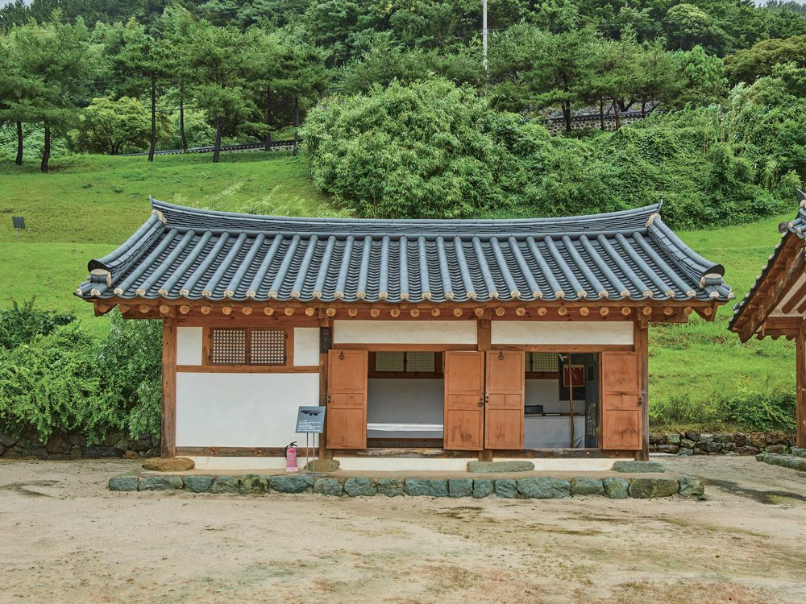
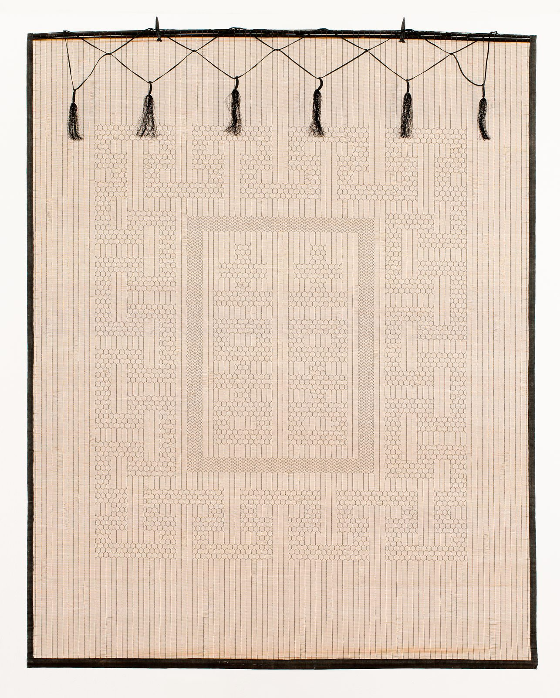
07SangjabangSource: Tongyeong City MuseumTongyeong bamboo blindSource: National Folk Museum of Korea Paju
07SangjabangWeaving that protects
Sangjabang wove boxes from split bamboo strips, willow twigs and bush clover. A box was a container, but also a tool for keeping and carrying things safely. Abalone sent as tribute in particular needed a light box that let air through. Sangjabang's weaving served practical needs, and its skill in working fine bamboo is also linked to Tongyeong's bamboo blinds.
08ChilbangSource: Tongyeong City MuseumLacquered Mirror Stand with Mother-of-Pearl InlaySource: National Folk Museum of Korea Paju
08ChilbangLacquer and mother-of-pearl
Chilbang worked with lacquer to make najeon chilgi, lacquerware inlaid with mother-of-pearl. Coating wooden furniture and vessels in lacquer makes the surface hard and gives it a deep sheen. Pieces cut from the shining inner layer of abalone shell are then set into it, adding light and pattern to the lacquered surface. Turning a natural material into ornament starts with understanding its properties. Tongyeong lacquerware is where the craft of lacquer meets the craft of mother-of-pearl.
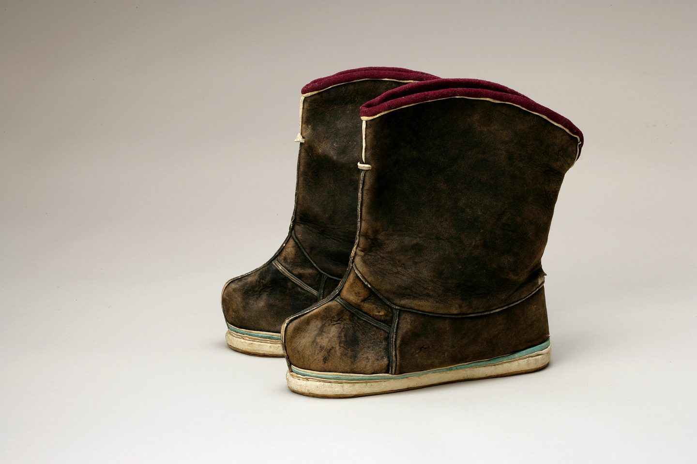
09Hwajabang and Anjabang buildingSource: Tongyeong City MuseumMokhwa BootsSource: National Folk Museum of Korea Paju
09HwajabangShoes made of leather
Hwajabang made leather footwear, including military boots and mokhwa, the tall leather boots officials wore under their robes. That leather skills went into the uniforms and gear of the base shows how practical the crafts of Tongjeyeong were. Saddles were made separately in Anjabang, in the same building.
10Hwajabang and Anjabang buildingSource: Tongyeong City MuseumSaddle with Mother-of-Pearl InlaySource: National Folk Museum of Korea Paju
10AnjabangA seat on horseback
Anjabang made saddles. A saddle sits on a horse’s back so that a rider can sit, and it was essential gear for traveling and fighting on horseback. Anjabang shares a building with Hwajabang. Even with the same leather, shoes and horse gear were made in separate workshops.
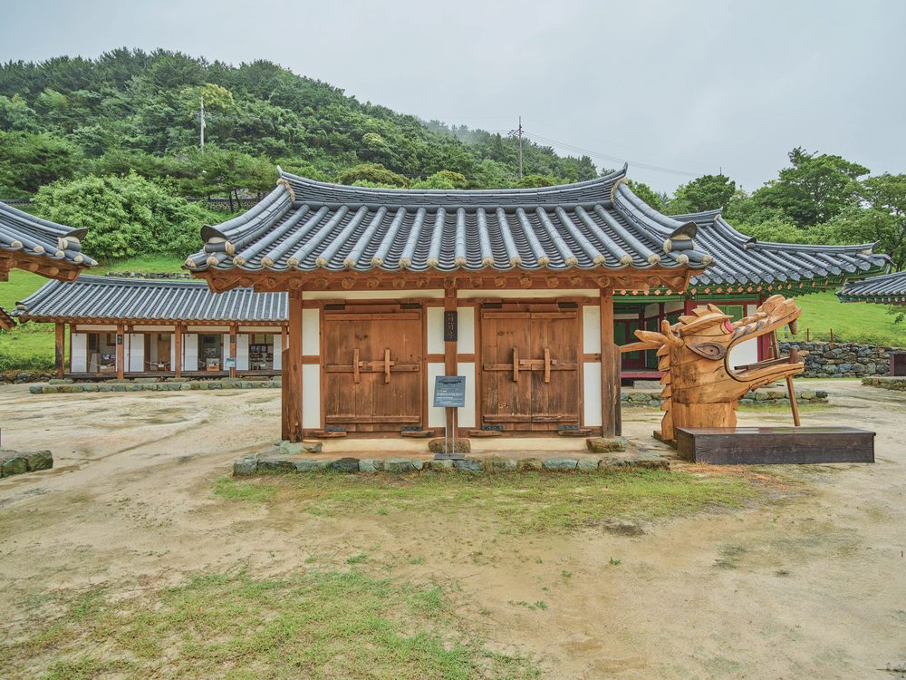
11DonggaebangSource: Tongyeong City MuseumDonggae QuiverSource: National Folk Museum of Korea Paju
11DonggaebangCarrying bow and arrows
Donggaebang made the donggae, a leather quiver worn on the back to hold a bow and arrows, and the gungdae, which held a bow at the waist. Making a weapon and making something that lets you carry it on the move are different skills. The donggae and gungdae were part of a sailor's kit, and making them meant shaping leather to fit their purpose.
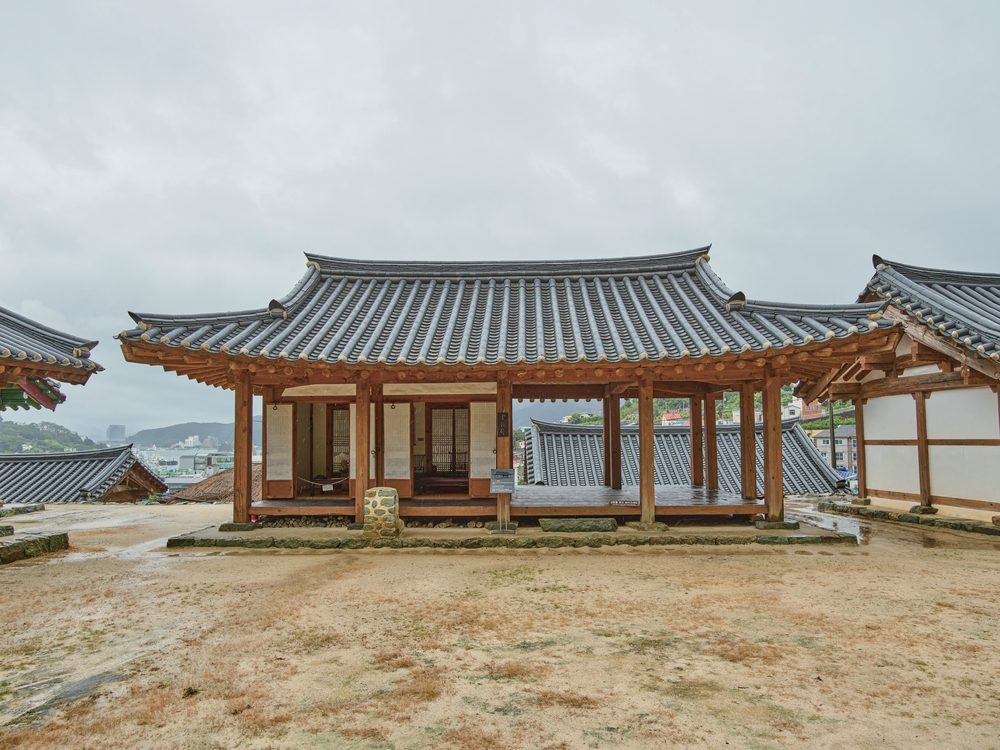
12HwawonbangSource: Tongyeong City MuseumPainting of naval drillsSource: e-Museum
12HwawonbangPaintings for the base's ceremonies
Hwawonbang painted decorative pictures for ceremonies and official events. The base's making did not stop at weapons and tools; its rites, formal events and dignity also called for painting and ornament. Painting decorated spaces and at the same time made the character of a ceremony visible.
13SomokbangSource: Tongyeong City MuseumTongyeong Bedside ChestSource: National Folk Museum of Korea Paju
13SomokbangFurniture on a human scale
Somokbang made furniture and writing-room goods from wood. Desks, tables, document chests and wardrobes for daily life were typical. Unlike carpenters who build houses, somok craftsmen make the furniture people use every day, fitted to its size and purpose. Furniture holds and supports things, and it also shapes the order and atmosphere of a room. In the way the grain is brought out and ornament added, you can see the maker's eye for beauty and practical judgment.
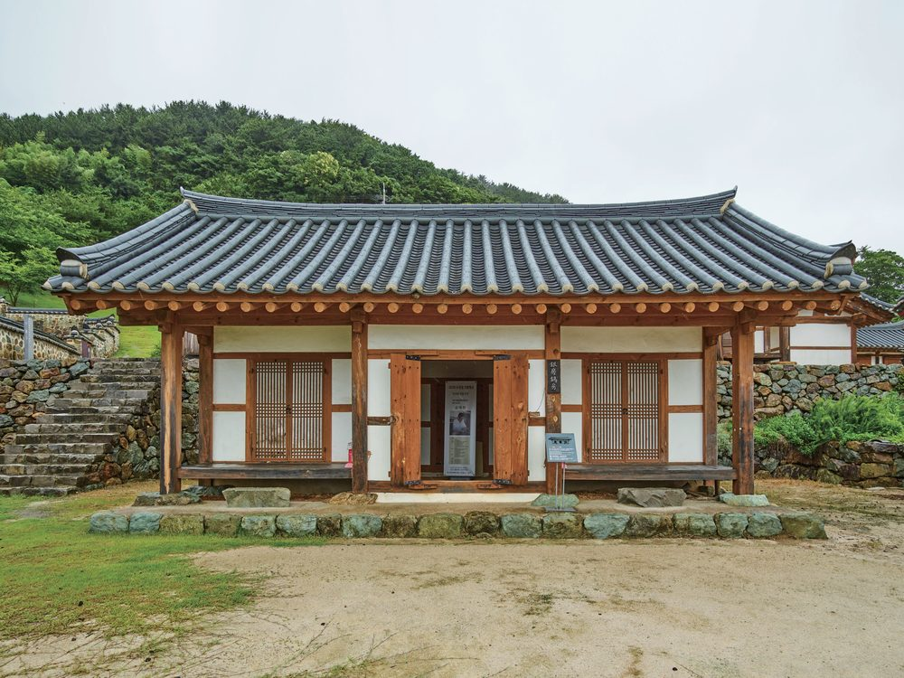
14EunseokbangSource: Tongyeong City MuseumFish-shaped Lock by a Duseok CraftsmanSource: e-Museum
14EunbangWorking gold and silver
Eunbang worked gold and silver into jewelry and other pieces. Metalwork demands the precision to shape material exactly as intended; even a small ornament depends on a careful finish and balanced form. Eunbang shows that the crafts of Tongjeyeong reached beyond everyday goods to ornaments and fine metalwork.
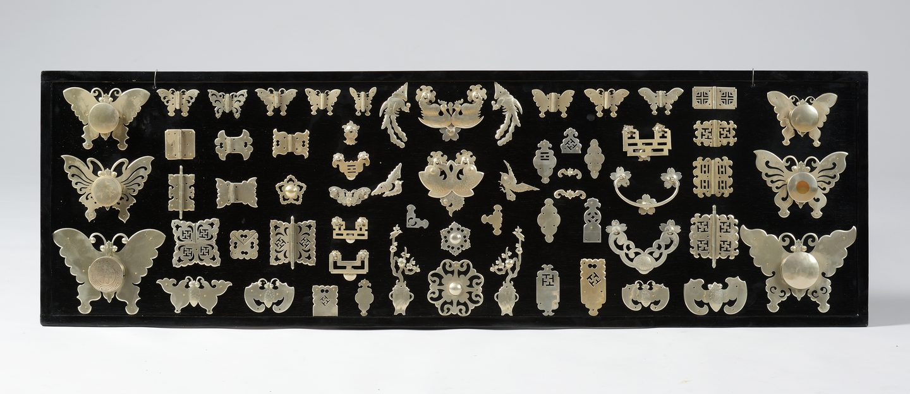
15EunseokbangSource: Tongyeong City MuseumCupronickel Metal FittingsSource: National Folk Museum of Korea Paju
15EunseokbangDetail in metal fittings
Eunseokbang made metal ornaments and fittings from tin and white brass. Fittings are attached to furniture and lacquerware, strengthening joints and structure while adding visual character to the surface. Look closely at the color of the white brass and the patterns of the fittings. Even on furniture finished in wood, lacquer and shell, metal fittings can define the whole impression.
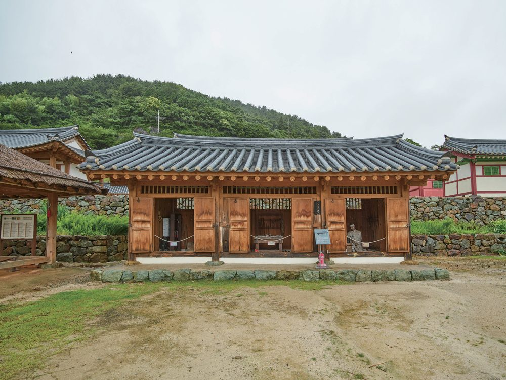
16YajangbangSource: Tongyeong City MuseumLacquered Arrow Case with Mother-of-Pearl Inlay and ArrowsSource: National Folk Museum of Korea Paju
16YajangbangThe iron craft of arrowheads and swords
Yajangbang made weapons and ironware such as arrowheads and swords. Working metal with fire and hammer was directly tied to the base's military role. Alongside the places that made weapons, Tongjeyeong had many workshops making equipment and supplies. Yajangbang shows the craft that most directly supported the base's strength and defense.
One abalone, two workshops
Mother-of-pearl lacquered document boxSource: National Folk Museum of Korea Paju
One example ties many of the workshop stories together: the abalone.
Tongyeong abalone was among the tribute sent to the king. To reach the court unspoiled, it needed more than a container: a box that was light and let air through. Sangjabang wove such boxes from bamboo and willow. Separate artisans are said to have been assigned to make boxes for the tribute abalone.
The abalone shell, meanwhile, became material for another workshop. Its shining inner layer, once worked, becomes the mother-of-pearl used in lacquerware, and Chilbang decorated its lacquerware with it. One workshop made boxes to carry the abalone safely; the other turned its shell into a beautiful decorative material.
One abalone, two workshops
Tongyeong abalone
Flesh · royal tributeSangjabanga light, airy boxthe craft of carrying
ShellChilbangthe shining inner layer turned into inlaythe craft of decoration
In this way a single abalone links the stories of Sangjabang and Chilbang. The same material called for different skills depending on its purpose. Carrying tribute and decorating the surface of craft objects were different tasks, but both workshops worked by understanding a material and transforming it for its use.
This example is a good starting point for understanding the 12 Workshops. Each workshop made its own things, but together they were a space where different needs and skills worked within one system, Tongjeyeong.
“A single abalone became the craft of carrying in Sangjabang, and the craft of decoration in Chilbang.”
The path to Tongyeong's crafts today
Tongjeyeong was abolished in 1895, but Tongyeong's crafts did not disappear with it. The Tongyeong Cultural City Center and the Korea Tourism Organization introduce the miseon fan, the gat, bamboo blinds, mother-of-pearl lacquerware, somok furniture, duseok metal fittings and soban tables among the traditional crafts found in Tongyeong today. Built on different materials and methods, each shows the character of Tongyeong's craft.
It is hard to say that today's crafts continue the workshop system of Tongjeyeong unchanged; times changed, and so did the workshops and the uses of their objects. Even so, the skill of handling materials and the sense for finishing form live on in Tongyeong's crafts. Tradition is not only repeating the objects of the past, but also understanding materials and techniques and putting them to use again today.
통영,세병관에서 12공방까지Tongyeong, from Sebyeonggwan to the 12 Workshops
Visitor route · Ticket office to the History Museum
Workshop route · Sebyeonggwan to Yajangbang
From Sebyeonggwan, enter the workshop street behind it and visit 04 Seonjabang through 16 Yajangbang in order. This diagram shows the order, not the exact building positions. Tap a number to read its story.